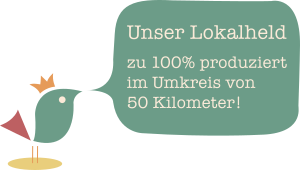
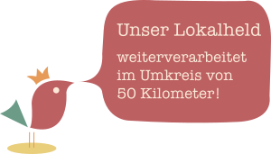

Unser Lokalheld kennzeichnet Produkte, die entweder zu
100 Prozent im Umkreis von
50km produziert, oder hier weiterverarbeitet wurden.
Unser Anliegen ist es, diese
für Euch sichtbar zu machen
und der Vielfalt
regionaler Produkte und deren
Produzenten ein Gesicht zu geben.
Mit dem Unser Lokalheld Siegel kennzeichnen wir die lokalen Produkte.
 
Unser Lokalheld Produkte findet ihr während eures Einkaufs
überall im Laden. So merkt Ihr schnell wie lokal man tatsächlich einkaufen kann.
Achtet einfach auf das Unser Lokalheld Siegel auf Produkten aus den Bereichen:
Obst & Gemüse, Mehl, Nudeln, Milch/Käse & Eier, Getränke, Wurst- und Fleischwaren, Marmelade...
Wenn auch ihr in eurem Laden Produkte mit dem Unser Lokalheld Siegel kennzeichnen wollt, oder ihr ein Produzent seid der eine spannende Geschichte zu erzählen hat, oder aber ihr einfach Fragen zu Unser Lokalheld habt dann könnt ihr uns gerne kontaktieren.